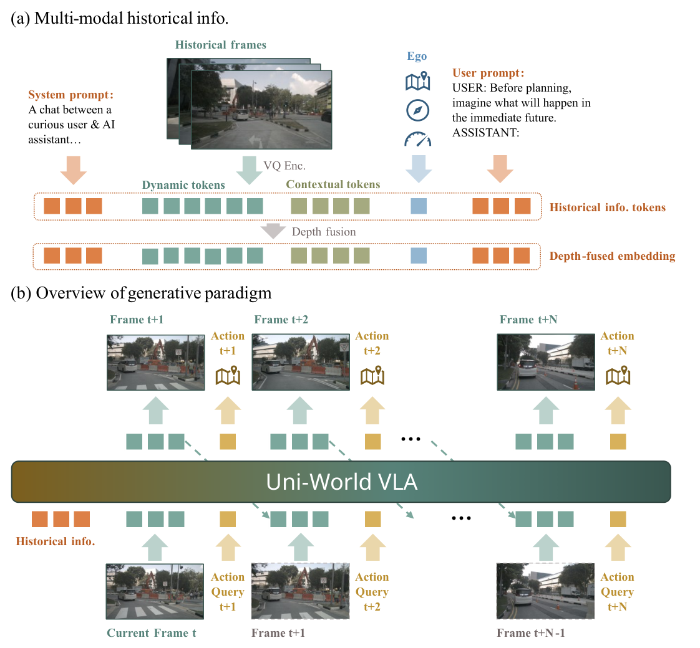
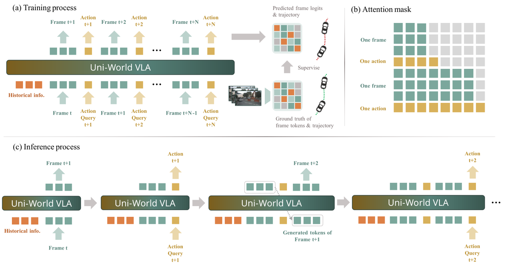
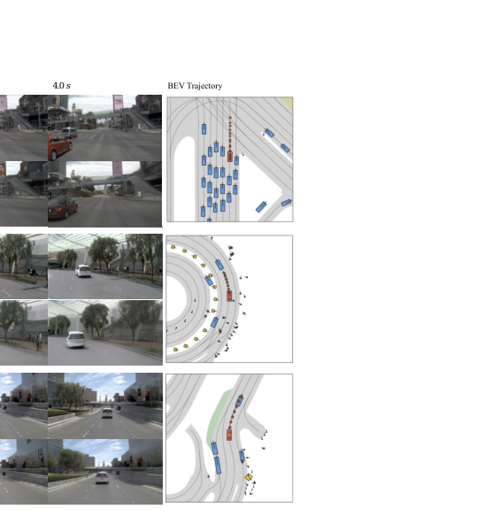
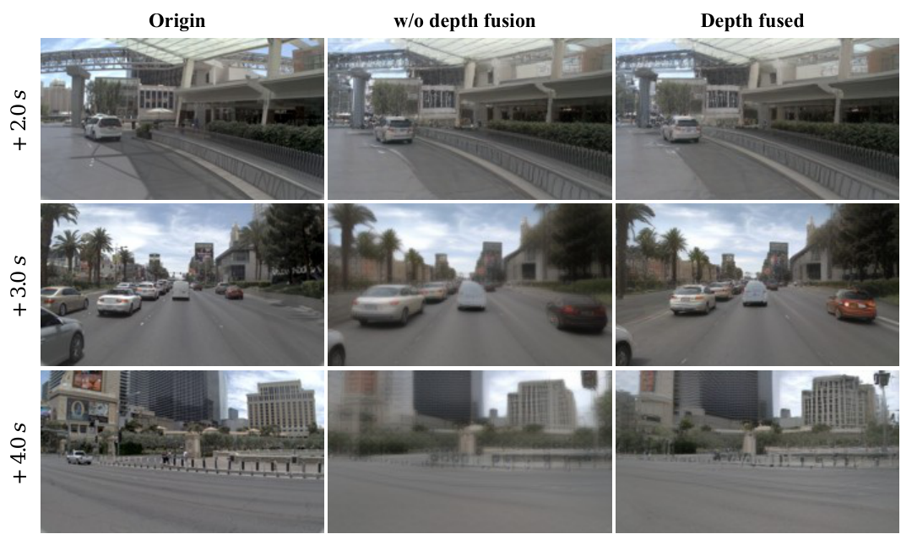

Uni-World
简单摘要
自动驾驶需要推理环境如何演变并相应地规划行动。现有的基于世界模型的方法通常首先预测未来场景，然后进行规划，从而导致可能偏离实际决策过程的开环想象。在本文中，我们提出了 Uni-World VLA，这是一种统一的视觉-语言-动作（VLA）模型，它将未来帧预测和轨迹规划紧密地交织在一起。我们的模型不是在规划之前生成全面的世界展示，而是逐步在预测未来框架和自我行为之间交替，从而使规划决策能够不断地以想象的未来观察为条件。
这种交错的生成形成了世界建模和控制之间的闭环交互，从而在动态交通场景中实现更具适应性的决策。此外，我们将单眼深度信息合并到帧中，为世界建模提供更强的几何线索，从而改进长视野场景预测。 NAVSIM 基准测试表明，我们的方法实现了有竞争力的闭环规划性能，同时产生高保真度的未来帧预测。这些结果表明，紧密耦合的世界预测和规划是可扩展 VLA 驱动系统的一个有前途的方向。自动驾驶 世界建模与规划 深度融合


简而言之，这篇论文关注的核心是：自动驾驶需要推理环境如何演变并相应地规划行动。现有的基于世界模型的方法通常首先预测未来场景，然后进行规划，从而导致可能偏离实际决策过程的开环想象。在本文中，我们提出了 Uni-World VLA，这是一种统一的视觉-语言-动作（VLA）模型，它将未来帧预测和轨迹规划紧密地交织在一起。我们的模型不是…
随着多模态大型模型（MLLM）和生成模型的快速发展，视觉-语言-动作（VLA）模型和世界模型在自动驾驶领域受到越来越多的关注。与主要依赖模仿学习的传统端到端方法不同，基于 VLA 的方法利用丰富的语义理解来预测自我车辆的未来轨迹，同时驾驶世界模型根据学习的物理动力学预测未来场景的演变。尽管这些方法取得了令人印象深刻的性能，但它们通常是孤立开发的，分别解决轨迹预测和环境建模，因此无法有效共享和集成两种范式之间的互补知识。
为了实现世界建模和轨迹预测之间的知识共享，先前的工作将这两个目标结合在一个统一的框架中。根据任务的时间顺序，这些方法分为两种范式：并行“预测和计划”和顺序“预测然后计划”。在“预测和计划”范式（图（a））中，世界建模和规划被集成在单个自回归架构中。尽管进行了联合训练，这些任务在功能上仍然是解耦的：世界建模侧重于以动作为条件的高保真下一帧预测，而轨迹规划将视觉观察映射到控制输出，而无需明确利用学习到的动态。
相比之下，“预测然后计划”范式（图（b））首先预测未来场景，然后生成以这些场景为条件的自我车辆的轨迹。一个关键的限制是隐含的假设，即环境保持静止，而现实世界的交通本质上是非静止的，自我代理与周围车辆之间不断相互作用。无论采用“预测并计划”还是“预测然后计划”范式，两者都存在一个共同的局限性。在复杂的城市场景中（例如，无保护的左转或并道），交通状况会迅速变化。如果世界模型以初始意图为条件生成多秒的推出（例如 4 秒），那么它实际上会产生对未来的“冻结的幻觉”。
此推出假设环境将对固定计划做出反应，该计划不会根据预测期间生成的观察结果进行更新。因此，当规划者依赖于推出的后期部分（例如，第三秒）时，视觉证据可能已经过时了，因为它没有反映在项目早期所做的微妙的自我车辆调整……
核心创新
综合引言与方法部分，这篇论文的核心创新可以概括为以下几方面：
1）问题定义与研究动机
随着多模态大型模型（MLLM）和生成模型的快速发展，视觉-语言-动作（VLA）模型和世界模型在自动驾驶领域受到越来越多的关注。与主要依赖模仿学习的传统端到端方法不同，基于 VLA 的方法利用丰富的语义理解来预测自我车辆的未来轨迹，同时驾驶世界模型根据学习的物理动力学预测未来场景的演变。尽管这些方法取得了令人印象深刻的性能，但它们通常是孤立开发的，分别解决轨迹预测和环境建模，因此无法有效共享和集成两种范式之间的互补知识。为了实现世界建模和轨迹预测之间的知识共享，先前的工作将这两个目标结合在一个统一的框架中。根据任务的时间顺序，这些方法分为两种范式：并行“预测和计划”和顺序“预测然后计划”。在“预测和计划”范式（图（a））中，世界建模和规划被集成在单个自回归架构中。尽管进行了联合训练，这些任务在功能上仍然是解耦的：世界建模侧重于以动作为条件的高保真下一帧预测，而轨迹规划将视觉观察映射到控制输出，而无需明确利用学习到的动态。相比之下，“预测然后计划”范式（图（b））首先预测未来场景，然后生成以这些场景为条件的自我车辆的轨迹。一个关键的限制是隐含的假设，即环境保持静止，而现实世界的交通本质上…
2）方法框架与核心模块
概述。图说明了我们未来框架和轨迹预测框架的总体范式。给定过去以自我为中心的框架和辅助状态信息，视觉观察首先使用 MagVIT-v2 编码为离散标记。然后，Depth Anything 3 估计的深度线索通过交叉注意力与历史视觉标记融合，以提供互补的几何信息。这些代表自我状态和愿景的历史输入被输入 Show-o，一个基于 Phi-1.5 的多模式法学硕士。然后，LLM 自回归生成未来帧和动作标记的交错序列，最终由 MagVIT-v2 解码器将其解码为 RGB 帧，并由 MLP 解码为轨迹。输入和标记化。令\(\I_t-M,...,I_t-1\)表示\(M\)个以自我为中心的历史图像帧（\(t\)表示当前时间，\(I R^H W 3\)，其中 和 是图像的高度和宽度）。为了捕捉环境背景和时间动态，我们将 NAVSIM 中的历史视频流划分为两种互补的模式。上下文标记对应于提供详细场景语义和结构信息的初始高分辨率帧，而动态标记以 10Hz 和较低分辨率进行采样，以捕获细粒度的运动线索和短期时间变化。除了图像数据之外，我们还收集时间\(t\)的辅助自我状态，其中包括自我车辆的速度、加速度和高级…
3）实验设计与工程价值
实验设置数据集。我们在 NAVSIM 驾驶数据集上进行所有实验，这是一个高保真模拟基准，提供以自我为中心的 RGB 序列、车辆状态信息和用于规划评估的结构化注释。我们遵循官方的训练/验证/测试分割，并在帧之间采用 0.5 秒的固定时间间隔。除非另有说明，否则模型预测 \(N=8\) 个未来帧（4.0 秒范围）。对于消融研究，某些变体需要 10 Hz 采样轨迹，而 NAVSIM 仅提供 2 Hz 日志。因此，完整的 10 Hz 轨迹由 nuPlan 补充。评估指标。我们使用面向规划和视频生成指标来评估我们的方法。规划绩效通过预测驾驶员模型评分 (PDMS) 来衡量，其中包括五个子指标：无过失碰撞 (NC)、可驾驶区域合规性 (DAC)、碰撞时间 (TTC)、舒适度 (Comf.) 和自我进步 (EP)。视频预测质量使用 Fréchet Video Distance (FVD) 进行评估，该…
技术细节
下面按照论文的方法章节结构展开，重点说明模型的关键模块、公式设计和训练策略。
概述。图说明了我们未来框架和轨迹预测框架的总体范式。给定过去以自我为中心的框架和辅助状态信息，视觉观察首先使用 MagVIT-v2 编码为离散标记。然后，Depth Anything 3 估计的深度线索通过交叉注意力与历史视觉标记融合，以提供互补的几何信息。这些代表自我状态和愿景的历史输入被输入 Show-o，一个基于 Phi-1.5 的多模式法学硕士。然后，LLM 自回归生成未来帧和动作标记的交错序列，最终由 MagVIT-v2 解码器将其解码为 RGB 帧，并由 MLP 解码为轨迹。输入和标记化。令\(\I_t-M,...,I_t-1\)表示\(M\)个以自我为中心的历史图像帧（\(t\)表示当前时间，\(I R^H W 3\)，其中 和 是图像的高度和宽度）。为了捕捉环境背景和时间动态，我们将 NAVSIM 中的历史视频流划分为两种互补的模式。上下文标记对应于提供详细场景语义和结构信息的初始高分辨率帧，而动态标记以 10Hz 和较低分辨率进行采样，以捕获细粒度的运动线索和短期时间变化。除了图像数据之外，我们还收集时间\(t\)的辅助自我状态，其中包括自我车辆的速度、加速度和高级驾驶命令。使用 MagVIT-v2 将每个原始图像 \(I\) 编码为一系列离散视觉标记，其中 \(c\) 表示上下文标记，\(d\) 表示动态标记。这种标记化产生了一个紧凑的符号表示，方便 LLM 主干进行自回归序列建模。此外，系统和用户文本提示也进行了编码，使法学硕士能够更好地理解场景和底层任务。如图（b）所示，模型输入被构造为一个简短的聊天式上下文：[系统提示|动态和上下文标记 |用户提示|自我令牌]，其中系统提示定义了助手的一般行为，鼓励在对话环境中做出有用且详细的响应，而用户提示指定了任务目标，明确要求模型在规划之前预测近期的未来。自我令牌将自我速度、自我加速度和时间 处的高级驾驶命令连接起来，代表当前的动态状态和导航意图。
LLM 使用混合令牌流并以交错方式执行自回归生成。统一分词器的更多细节可以在附录中找到。交错的帧动作生成。在我们的实现中，我们生成最多\(N=8\)个未来帧。每帧时间间隔为 0.5 秒，这对应于 4.0 秒的预测范围。与纯粹的顺序视频预测不同，我们采用了另一种生成范式，在视觉预测和动作查询之间逐步交互。生成每个未来帧\(t+k\)后，与相同时间戳对应的动作查询被反馈到LLM…
$$ {c, d} = \mathrm{Encoder}_{\mathrm{MagVIT}}(I) $$
结构信息，而动态标记以 10 Hz 和较低的分辨率进行采样，以捕获细粒度的运动线索和短期时间变化。除了图像数据之外，我们还收集时间 \(t\) 的辅助自我状态，其中包括 t 的速度、加速度和高级驾驶命令......
$$ \hat I_{t+k} = \mathrm{Decoder}_{\mathrm{MagVIT}}(\hat d_{t+k}; c_{t+2\lfloor k/2 \rfloor}). $$
+k,a_t+k-1),align 其中\(d\)和\(a\)分别表示动态标记和动作标记。解码并输出。每个预测的离散标记序列均由 MagVIT-v2 解码器解码为相应的 RGB 帧，以提供本身视觉指导的上下文标记为条件……
$$ \omega(d_{t+k}^i, d_{t+k-1}^i)=\alpha \mathbb{I}(d_{t+k}^i\ne d_{t+k-1}^i)+\beta \mathbb{I}(d_{t+k}^i=d_{t+k-1}^i), \quad \alpha > \beta $$
令牌。指出，如果简单地用交叉熵损失来监督逻辑，很大一部分帧标记往往在相邻帧之间保持不变。为了缓解这个问题，我们采用动态焦点损失，通过空间加权强调时间变化的图像区域。具体来说，我们定义...
$$ \mathcal{L}_{\text{dyn}} = -\frac{1}{N}\sum_{k=1}^{N}\sum_{i=1}^{L} \omega(d_{t+k}^i, d_{t+k-1}^i)\log p_\theta(d_{t+k}^i \mid \hat d_{<t+k}^i, \hat a_{<t+k}^i), $$
1^i)\) 为：其中 \(I()\) 是指示函数，\(\)、\(\) 是控制动态与静态令牌预测的相对重要性的超参数。整体动态加权交叉熵定义为： 其中\(L\)表示一帧内预测的视觉标记的总数。对于轨迹...
$$ \mathcal{L}_{\text{traj}} = \frac{1}{N} \sum_{k=1}^{N} \left\| \hat{a}_{t+k} - a_{t+k} \right\|_1. $$
mega(d_t+k^i, d_t+k-1^i) p_(d_t+k^i d_<t+k^i, a_<t+k^i)，方程其中 \(L\) 表示一帧内预测视觉标记的总数。对于轨迹预测，与动作标记相对应的隐藏状态被馈送到 MLP 头中，以回归未来每个步骤的自我位置。我们监督预…
$$ \mathcal{L} = \lambda_1 \mathcal{L}_{\text{dyn}} + \lambda_2 \mathcal{L}_{\text{traj}}, $$
在工厂预测中，与动作标记相对应的隐藏状态被输入到 MLP 头中，以回归未来每个步骤的自我位置。我们使用 L1 损失来监督预测轨迹 \(a_t+1:t+N\)：最终的训练目标是两项的加权和：其中 \(_1\)、\(_2\) 平衡视觉生成…



把全文方法串起来看，这篇论文的逻辑基本都遵循同一条主线：先把输入组织成更容易处理的表示，再通过模型结构和损失函数把这个表示推向目标输出，最后用可视化与数值实验共同证明该设计有效。
实验结论
实验部分主要回答两个问题：第一，方法是否真的优于已有基线；第二，这种优势来自哪一个设计决策。
实验设置数据集。我们在 NAVSIM 驾驶数据集上进行所有实验，这是一个高保真模拟基准，提供以自我为中心的 RGB 序列、车辆状态信息和用于规划评估的结构化注释。我们遵循官方的训练/验证/测试分割，并在帧之间采用 0.5 秒的固定时间间隔。除非另有说明，否则模型预测 \(N=8\) 个未来帧（4.0 秒范围）。对于消融研究，某些变体需要 10 Hz 采样轨迹，而 NAVSIM 仅提供 2 Hz 日志。因此，完整的 10 Hz 轨迹由 nuPlan 补充。评估指标。我们使用面向规划和视频生成指标来评估我们的方法。规划绩效通过预测驾驶员模型评分 (PDMS) 来衡量，其中包括五个子指标：无过失碰撞 (NC)、可驾驶区域合规性 (DAC)、碰撞时间 (TTC)、舒适度 (Comf.) 和自我进步 (EP)。视频预测质量使用 Fréchet Video Distance (FVD) 进行评估，该距离衡量生成视频的分布级真实性。实施细节。我们的模型是从策略世界模型（PWM）初始化的，它本身是从 Show-o 微调的。对于视觉标记化，我们采用在 PWM 双分支框架下预训练的压缩 MagVIT-v2 标记器。分词器由两个分支组成，每个分支都有不同大小的码本。冻结的高分辨率分支处理分辨率的输入图像并生成每帧的上下文标记。预训练的低分辨率分支处理分辨率图像并生成每帧的动态标记。此外，深度编码器的权重使用 MagVIT-v2 的权重进行初始化。对于 Uni-World VLA，我们在 NAVSIM 上针对历元微调模型，选择基于 PDMS 的最佳检查点（在历元 实现）。本文采用的深度融合训练遵循两阶段渐进范式，旨在平衡特征提取的稳定性和跨模块融合的适应性，保证模型稳定收敛并实现有效的特征融合。我们使用 AdamW 作为优化器并在 NVIDIA H20 GPU 上训练模型。仅使用前视摄像头作为输入，训练批量大小为 。该模型需要几秒钟的历史观察来自回归预测第二个视野内的未来帧和相应的路点，其中学习率遵循余弦退火时间表。具体训练过程和关键参数配置详述如下。
space1.2 第一阶段：深度特征提取模块的预训练 Spacing CDE 和 DDE 模块在此阶段进行训练。我们采用无动作视频预测设置来提取深度信息；具体来说…
- 方法在核心指标上的优势与结构设计和训练目标直接相关；
- 消融实验表明，拿掉关键模块后性能与结果质量都有明显回落；
- 论文不仅比较数值，也关注可视化质量、稳定性和泛化能力等更贴近真实使用的信号。
理解评价
我们推出了 Uni-World VLA，这是一种将世界预测和轨迹规划交错的统一 VLA 模型。在该模型中，统一的自回归架构在未来帧预测和轨迹规划之间交替，在预测的环境演化和控制之间创建紧密的反馈循环。我们还提出了增强该框架的方法：通过交叉注意力合并单眼深度特征。在 NAVSIM 高保真模拟器的实验中，Uni-World VLA 的性能显着优于先前最先进的方法。与基准世界模型相比，它获得了最高的总体驾驶分数 (PDMS)，并提高了碰撞时间 (TTC) 安全指标和自我进步 (EP)，同时保持了具有竞争力的视频预测质量 (FVD)。
这些结果表明，具有深度融合的交错预测和规划策略可以在复杂的驾驶场景中实现更稳健、上下文感知的决策。
如果把它当成研究参考，建议重点关注三件事：第一，这套方法真正依赖的归纳偏置是什么；第二，实验中真正拉开差距的模块是哪一个；第三，它的局限究竟来自数据、算力还是监督信号本身。
以下相关论文可以作为进一步追踪的入口：